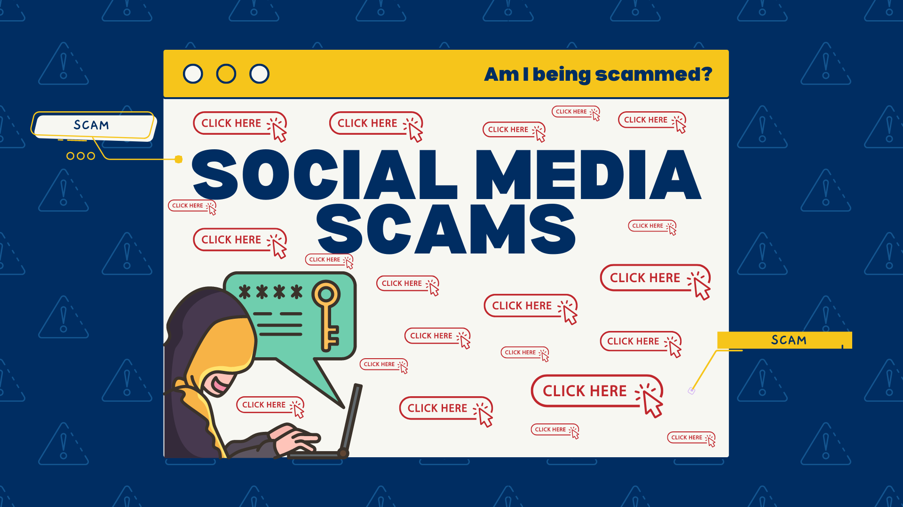

Social media platforms facilitate online connections, idea sharing, and photo and video posting. Because users frequently give personal information, fraudsters may target them. These sites are used by scammers to deceive consumers into giving financial or sensitive information. Common strategies include phony offers, urgent communications, and dubious connections. It's critical to comprehend social media frauds in order to use these networks safely.
What Exactly is a Social Media Scam?
A deceptive operation that targets people on social media sites like Facebook, Instagram, or Twitter is known as a social media scam. The purpose of scammers is to take money, private information, or other valuables from naive individuals. These frauds may manifest as phishing messages, malicious advertisements, phony profiles, or fraudulent giveaways. Usually, the intention is to deceive people into paying or divulging private information. Scammers have developed increasingly inventive and advanced methods over time. They exploit the transparency and trust that many online users exhibit. Knowing these scams enables people to spot them and steer clear of them before any damage is done.
The "Is This You?" Phishing Trap
The "Is This You in the Picture?"scam" is a typical social media phishing technique. This fraud involves a fake or compromised account sending a message inquiring as to whether the image in a link is you. The purpose of the message is to pique the user's interest so they will click the link right away. Clicking on the link could take you to a fake login page where account information is stolen. This information can then be used by scammers to gain access to accounts or carry out additional fraud. Because it frequently originates from accounts that appear familiar, this kind of scam spreads quickly. One way to avoid falling for this trap is to be wary of unexpected messages.
Fake Giveaways and Too-Good-To-Be-True Deals
On social media, fake promotions and prizes are frequently used to deceive users into giving personal information. Scammers frequently pose as legitimate brands but lack authenticity, such as a blue checkmark. Another red flag is a new or empty account with few posts or followers. Posts containing misspellings, confusing guidelines, or too many chores to do are probably frauds. Red flags include promises of prizes that seem too good to be true, such as extravagant vacations or pricey devices. It is never acceptable to request financial details in order to claim a prize. Users might prevent falling for these social media frauds by exercising caution and double-checking accounts and offerings.
Impersonation: When Hackers Clone Your Social Media
When scammers make a fake version of your social media account, it's known as profile cloning. To make the account appear authentic, they replicate your name, images, and public posts. They send messages or friend requests to people you know after creating the fictitious profile. Scammers take advantage of people's confidence to deceive friends into clicking on dangerous links or to demand money or personal information. Because it uses data that you have previously made public, this approach is simple. Identity theft, psychological distress, and reputational harm can result from profile cloning. The chance of being cloned can be decreased by safeguarding the privacy of your account and exercising caution while making friend requests.
The Danger of Oversharing Online
Social media oversharing could put at risk your safety and privacy. Although posting private information, like your residence or school, may appear harmless, outsiders may take advantage of it. It is possible for others to recover or take screenshots of even erased posts. Strangers can track you more easily if you enable location features or geotag your images. Your reputation at work or school may suffer if you openly discuss personal issues. Additionally, oversharing raises the possibility of identity theft, cyberstalking, and unwelcome attention. You can safeguard your digital footprint and personal information by being cautious about what you post.
Warning Signs of a Scam Account
Users can stay clear of social media frauds by identifying warning indicators. If a message claims that a celebrity endorses a good or service, proceed with caution. Scams sometimes involve messages from strangers requesting money immediately. Serious warning signs include threats to release private photos without payment. Offers that guarantee easy and rapid money are not to be believed. Buyers that offer excessive prices without inspecting the things or deals that appear to be too inexpensive are suspicious. Keeping an eye out for these indicators contributes to online user safety.
How to Protect Yourself Online
Protecting yourself on social media starts with managing your privacy settings carefully. Share only information that does not put your security at risk. Avoid giving out personal or financial details like addresses, emails, or banking information. Enable two-factor authentication for extra account protection. Never log in through links received in messages, emails, or posts from unknown sources. Verify company accounts by checking descriptions or contacting official customer service. Avoid using public Wi-Fi to access social media, as these networks can allow fraudsters to steal your data and compromise your accounts.
Conclusion
Although social media is a useful tool for networking, exchanging ideas, and publishing material, there are risks associated with it. Phishing communications, fake freebies, and profile cloning are some of the strategies used by scammers to target individuals who give personal information. These frauds take advantage of people's trust and curiosity in order to steal money, personal information, or other goods. Users are even more at risk for scammers due to oversharing and poor account security. Unverified accounts, unreasonable offers, and questionable messages are warning indicators. Using strong passwords, avoiding unfamiliar links, checking accounts before engaging, and carefully adjusting privacy settings are all important aspects of self-defense. To safely enjoy social media and avoid identity theft, fraud, or reputational damage, one must remain vigilant and knowledgeable.